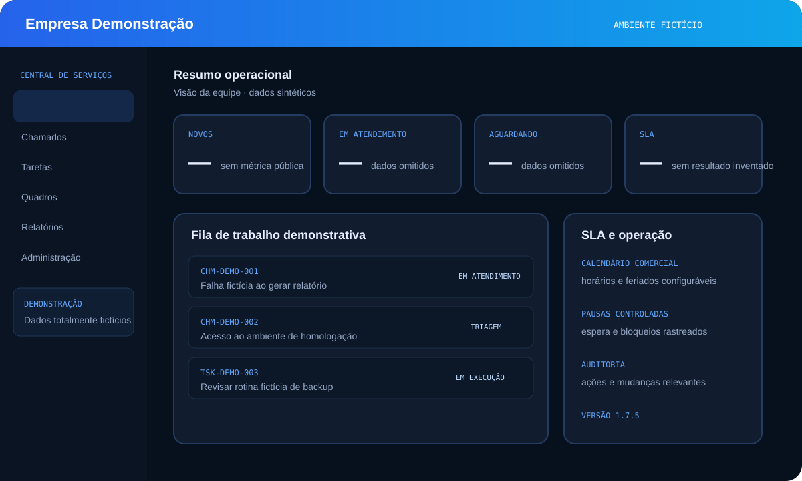

Sites, portfólios e páginas de venda
Para apresentar seu trabalho, validar uma ideia ou gerar novos contatos com uma experiência rápida e responsiva.
Quero apresentar meu negócioSITES · SISTEMAS · AUTOMAÇÕES · INTEGRAÇÕES
Você traz a ideia ou o problema. Eu desenho e desenvolvo a solução — com interface, código, dados e publicação.
De uma presença profissional na internet a um sistema completo para organizar a operação.
Para apresentar seu trabalho, validar uma ideia ou gerar novos contatos com uma experiência rápida e responsiva.
Quero apresentar meu negócioAplicações web ou mobile para substituir controles dispersos e organizar regras, usuários e histórico.
Tenho um processo para organizarAPIs, bancos de dados e rotinas que conectam ferramentas e reduzem atividades manuais.
Quero reduzir trabalho manualNovas funcionalidades, correções e melhorias para softwares que já fazem parte da rotina.
Preciso evoluir um softwareA Central de Serviços de TI mostra como transformo uma rotina complexa em software utilizável, seguro e preparado para evoluir.

Chamados, tarefas, SLA, auditoria, dashboards e implantação local reunidos em uma aplicação Java/Spring.
Conhecer o estudo de casoVistorias de entrada e saída com fotos, assinaturas e integração de dados.
Registro de entregas com assinatura digital e histórico por colaborador.
Contagem e controle de estoque para apoiar o inventário cíclico.
Painéis para organizar dados e acompanhar indicadores operacionais.
A ideia, o problema e quem vai usar.
Prioridades, escopo e caminho da entrega.
Interface, código e dados com validações.
Solução pronta para entrar em uso.
Você não precisa chegar com tudo definido. Conte o cenário e eu ajudo a transformar a necessidade em um próximo passo possível.